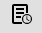

You can check the logs for a specific execution job or for the execution job run latest.
You can check the logs for a specific execution job through a console log or by downloading the job's log files. This is done by clicking the respective icon in the right-hand side of the job row in the Execution Results view. The following figure presents an example of downloading the logs.
To display the console log, click the  icon on the job row.
You can view the test reports and logs for a test suite by clicking REPORT associated with that test suite's button. If there are multiple executions for a test suite, only the report and log files generated by the last execution are shown.